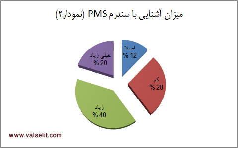
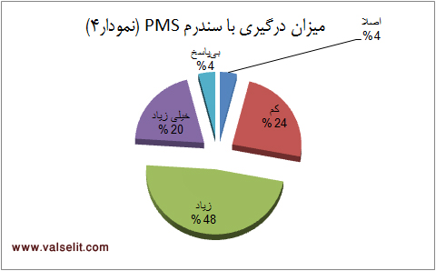

پذيرش > سایت نوشته ها > جنون ماهانه و زنان نویسنده/شهلا زرلکی


 جنون ماهانه و زنان نویسنده/شهلا زرلکی جنون ماهانه و زنان نویسنده/شهلا زرلکی
2 آذر 1390 - - نسخه قابل چاپ
“بر بلندترین تخت جهان، هنوز بر ماتحت خود نشسته ایم”
پیشانی نوشت این نوشتار، جمله ای از مونتنی است. در میان اندیشمندان فرانسوی، مونتنی را دوستتر دارم. به خاطر واقعگرایی زمینی اش. مونتنی حقیرترین و در عین حال حیاتی ترین جلوه های هستی آدمی را انکار نمیکند. آنها را بزرگ میکند و پیش چشم میآورد تا باور کنیم آدمی تا چه حد در قید و بند جسم خویش گرفتار است. انتخاب آن جمله بر سردر این نوشتار هم از همین روست. ساده انگارانه است اما حقیقت حاکم بر ماتحت ما، نیرومندتر از آن است که با تمسخر و شوخی نادیده اش بگیریم. مونتنی این حقیقت را این گونه توصیف میکند؛ حقیقت ناگزیر اسفنکتر را: «آن اسفنکتری که مسئول تخلیه شکم ماست، انبساط و انقباضهای مناسب خود را دارد، فارغ از خواستههای ما و حتا مخالف آنها.»1
این مقدمه مزین به مونتنی به این دلیل اینجا آمده است که از همین ابتدا تکلیفم را با خواننده این متن روشن کنم. متنی که در پی خواهد آمد درباره جسم است و ویژگی های زیستی آن. و مشخصتر بگویم درباره جسم و روان زنانه است و فراز و فرود هورمونهایش. درباره ملال کروموزوم ایکس2 و پیامدهایش. درباره سندرمی ظاهرا تازه شناخته شده و باطنا کهن به نام اختلالات روانتنی مربوط به قاعدگی که دستکم قدمتی همسان با بقراط دارد. قرار است این بحث را باز کنم که آیا این اختلال که از این پس برای راحتی کار، فقط نام اختصاریاش (پی ام اس) را به کار میبرم در کار نوشتن خلاقه تاثیر دارد یا نه؟ قرار است این پرسش را به بحث بگذارم که چرا در آثار نویسندگان زن هیچ اثری از این ویژگی زیستی وجود ندارد؟ برای وارد شدن در چند و چون این پرسشها ابتدا باید تعریفی کوتاه داده شود از این سندرم و مختصات آن. این سندرم و همه مشقات و مشتقات آن در کتاب اخیرم به تفصیل و تشریح بیان شده؛ کتابی با موضوع زن و با رویکرد پزشکی و روانشناسی به نام زنها و آدمها. کتاب در دست ناشر است و در حال گذراندن مراحل انتشار. پس خودم را برای این بخش از مقاله، به زحمت دوباره نمی اندازم و عین تعریف را از کتاب فعلا منتشر نشده ام نقل میکنم تا بعد برسم به جوابهای آن دو پرسش که در خلال چند سطر پیش مطرح شد.
انگلوساکسونها خونریزی ماهانه زنان را «لعنت ماهانه» مینامند. در سومین ویرایش راهنمای تشخیصی و آماری اختلالات روانی3 (DSM-III-R 1987) از اختلال روانی جدیدی نام برده شده که نام اختصاری آن «پی ام اس»4 است. اگر به راه نامگذاری از نوع انگلوساکسونی برویم، میتوانیم نام این اختلال جسمی- روانی را «جنون ماهانه» بگذاریم. کاترینا دالتون پژوهشگر- درمانگر بریتانیایی نخستین نظریه پرداز در زمینه پی ام اس در سال 1978 کتابی نوشته است با عنوان ماهی یک بار. این کتاب در حال حاضر یکی از منابع مهمی است که در زمینه اختلال پی ام اس وجود دارد. بسیار پیشتر از دالتون و البته 400 سال پیشتر از میلاد مسیح، بقراط این اختلال را این گونه تشریح کرده است: «اخلاط فاسد که میکوشد راه خود را به خارج از زهدان بیابد، این مشکل را ایجاد میکند.»5 اما گویاترین و امروزیترین تعریف را کاترینا دالتون ارائه میدهد. دنیز راسل به نقل از دالتون در کتاب زنان، جنون، پزشکی میگوید: «کاترینا دالتون نظریه پردازی مهم در عرصه پی ام اس، که سالها رئیس کلینیک بزرگی در لندن بوده است، ادعا میکند که اصطلاح پی ام اس انواع گوناگون نشانه هایی را در بر میگیرد که در دورهای معین به دنبال مرحله ای بدون نشانه در هر چرخه قاعدگی بروز میکنند. این مرحله ممکن است در فاصله تخمک گذاری تا روز چهارم قاعدگی قرار داشته باشد. او توضیح میدهد که اصطلاح پی ام اس زمانی برگزیده شد که هنوز نفهمیده بودند این نشانه ها میتوانند در زمان قاعدگی و تخمک گذاری نیز بروز کنند... دالتون میگوید اصطلاح تنش پیشقاعدگی تنها نشانه های روانی را در بردارد: افسردگی، بیحالی و زودرنجی. پی ام اس هم این نشانه ها و هم نشانه های جسمانی مثل آسم، میگرن و صرع را دربرمیگیرد... او میگوید "تصویر زنان به صورت موجوداتی دمدمی مزاج، تغییرپذیر، متلون و مشکل پسند" و بی منطقی ادواری ما را میتوان بر اساس اوج و فرود هورمونهای قاعدگی تبیین کرد. دالتون ادعا میکند نشانه های پی ام اس در چهار روز قبل از قاعدگی و چهار روز اول قاعدگی شدیدترند.»6
دالتون توصیف و تشریح خود را از این اختلال با پیش کشیدن کارکرد هورمونها تکمیل میکند. اینجا نیز پای کژکاری هورمونهای طبیعی در میان است. به عقیده دالتون، در روزهای پیش از قاعدگی میزان پروژسترون پایین میآید. اصلا او پی ام اس را «بیماری کمبود پروژسترون» مینامد. اما از نظر او آنچه سبب میشود علایم این کمبود هورمونی به شکل اختلالات روانی تشدید شده بروز کند، خلق ادواری زنان و یا همان سیکلوتایمیاست که به فراز و فرود عصبی حاصل از کاهش پروژسترون دامن میزند. بنابر تعریف دالتون و دیگرانی که در این زمینه، نظریهپردازی کردهاند و با تکیه بر فرضیه «کروموزوم افسرده» میتوان به فرمول سادهای برای پیاماس دست یافت: خلق ادواری و کمبود پروژسترون مساویست با پیاماس.
برای روشنتر شدن تعریف این جنون زنانه و نقشی که در زندگی اجتماعی و خانوادگی زن دارد، باید نشانههای این اختلال به زبان سادهتری برشمرده شود. بر اساس کتاب ماهی یکبار دالتون، در ایران کتابی منتشر شده است با عنوان مشکلات پیش از عادت ماهانه. این کتاب منبع اصلی خود را همان کتاب دالتون قرار داده و با ضمیمه کردن آخرین اخبار و نتایج تحقیقات درباره پیاماس، منبع خوب و جامعی است که به زبان ساده، این سندرم را معرفی میکند. برای روشنتر شدن تعریف این اختلال، به زبان توصیفی و ساده همین کتاب اکتفا میکنیم: «... تا به حال بیش از 150 نشانه متفاوت برای آن گزارش شده است که برخی از موارد مهم آن عبارتند از نفخ شکم، سردرد، سرگیجه، تشویش و اضطراب، دردناک شدن پستانها، گریههای بیدلیل، افسردگی، خستگی، بیحالی، عصبانیت بیدلیل، تحریکپذیری، حواسپرتی، تشنگی، تمایل شدید به خوردن مواد قندی، و تورم دستها و پاها... شدت پیاماس از خانمی به خانم دیگر بسیار متفاوت است. طول دوره پیاماس نیز در افراد مختلف فرق میکند. گاهی به یک تا دو روز پیش از عادت ماهانه محدود میشود و گاهی حتا دو هفته طول میکشد... با افزایش سن و همچنین پس از هر بارداری نشانههای پیاماس شدیدتر میشود. به همین دلیل پیاماس در بیشتر بیماران بین سی تا چهل سالگی تشخیص داده میشود و به همین علت در سال 1963 دکتر استیسی نام "نشانگان دهه سوم زندگی" را روی این اختلال گذاشت.»7
با توجه به نامگذاری دکتر استیسی، باید دریافت که در زندگی خانوادگی و سالهای زندگی مشترک، پیاماس تا چه حد میتواند برای زن و مرد سرنوشتساز باشد. همین «نشانگان دهه سوم زندگی» ثابت میکند که زن در اوج زنانگی خود و در سالهای کامل بودن، با همه مختصات زن بودن روبهرو میشود. استعاره «زن سیساله» بالزاک هم اینجا معنا پیدا میکند. به راستی چرا یکی بزرگترین نویسندگان قرن نوزدهم، نام رمانش را زن سیساله میگذارد؟ آیا سیسالگی آغاز زندگی تازهای است؟ سیسالگی سن بلوغ زنانه است. بعضی نظریات روانشناسی سن رشد کامل عقلی و شخصیتی انسان را فارغ از جنسیت، بیست و هفت سالگی میدانند. به نظر میرسد سه سال مدت زمانی کافی برای جاافتادن در قالب رشدیافته و کامل باشد. در سیسالگی همه چیز آزموده شده. زن از دخترانگی و جهان خاص آن فاصله گرفته است. اکثریت زنان در این سن ازدواج کردهاند و مادر شدهاند. عقده باکرگی گشوده شده و زن با هدف دور از دسترس خود یعنی مرد از نزدیک آشناست. سیسالگی فرصت و مجال ظهور کامل یک زن با همه برتریها و فروتریهای سرشتی است. چیزی برای پنهان ماندن وجود ندارد. زن در بالاترین نقطه بروز همه زنانگیهای مادی و معنوی است. هورمونها با بینظمیهای نظاممندشان فرمانروایی میکنند. زن با هستی یکپارچه خود در برابر جهان عرضاندام میکند. زن سیساله در محاصره هستی خویش است. در محاصره عشقهای ادواری و جنونهای ماهانه خود. او با هورمونهایش تصمیم میگیرد. هورمونها نامنظمند و تصمیمها ناپایدار. هستی هیستریک او به دنبال عشق است و هیجان. اما باید اندوهناکی ژنها را هم تاب بیاورد. گهواره تهی اندام زنانه هر ماه فرو میریزد. زن هر ماه زلزلهای را از سر میگذارند. زلزلهای با قدرتهای متفاوت تخریب. ویرانی مکرر این گهواره، بر جان و جسم تاثیر میگذارد. بقراط میگفت اخلاط فاسد خود را به در و دیوار میکوبند تا راهی به بیرون بیابند و پزشکان امروزی میگویند کاستی و فزونی هورمونهاست که بر سیستم عصبی اثر میگذارد و این گونه میشود. این گونه میشود که زن در روزهایی از ماه تحریکپذیر میشود، پرخاش میکند، گریه میکند، حسادت میکند، بهانه میگیرد، سردرد میگیرد، خشمگین میشود، فریاد میکشد و اطرافیان را حیرتزده میکند. توصیف سیمون دوبووار از وضعیت فروکاهنده قاعدگی نیز قابل تامل است: «اعضای زنانه آسیبپذیرترند. کارشان ظریف است. نیروی عضلانی، تحمل و چابکی زن کمتر از مرد است. عدم تعادل ناشی از ترشح هورمونها سبب ایجاد بیثباتی عصبی و انقباض و انبساط عروق میشود. بحران قاعدگی دردناک است: سردردها، کوفتگی، درد نواحی شکم، فعالیتهای عادی را دشوار و حتا غیرممکن میکند. غالبا آشوبهای روانی نیز به این ناراحتیها افزوده میشود؛ زن عصبی و زودخشم میشود، این که زن هر ماه از حالت نیمه بیگانه بودن با خود گذر کند امری رایج است؛ از آن هنگام کنترل سیستم عصبی و سیستم سمپاتیک از طریق مراکز مربوط تامین نمیشود؛ اختلال در گردش خون، بعضی خودمسمومسازیها، سبب میشود که پیکر به پردهای که بین زن و جهان قرار میگیرد، به مهی سوزان که بر زن سنگینی میکند، خفه و جدایش میکند، بدل شود: در خلال این تن غمآلود و منفعل، سراسر جهان وزنهای بسیار سنگین است. زن ستمدیده و غرقه، از خود بیگانه میشود، زیرا با بقیه دنیا هم بیگانه شده است.»8
فکر میکنم این تعریف و توضیح کافی باشد برای معرفی این جنبه تقریبا مسکوت مانده از حیات زنانه. پس حالا بیمعطلی برویم سراغ دو پرسش بنیادی این مقاله. الف: آیا پیاماس و قاعدگی در فرایند نوشتن خلاقانه زنان نویسنده نقش (مثبت یا منفی) دارد؟ ب: چرا در آثار- به ویژه زنانه- زنان نویسنده، تعریف و توصیف موقعیت قاعدگی و مشتقات آن وجود ندارد؟ درباره پرسش اول بدون مدرک و سند، چیزی نمیتوان گفت. طبیعتا از جنبههای خصوصی بیولوژی زنان نویسنده هنگام نوشتن بیاطلاعیم. پاسخگویی به این پرسش و تامل در آن مستلزم تحقیقات میدانی و دست کم ارائه پرسشنامهای به یک جمعیت آماری محدود از نویسندگان زن است. این نیاز هنگام نگارش این مقاله آشکار شد و لازم شد نتایج یک تحقیق میدانی را به شکل نموداری مجزا ضمیمه این نوشتار کنم. شک نداشتم که مقاله حاضر بدون چنین ضمیمهای کامل نخواهد بود. بنابراین یک فهرست سیتایی از زنان نویسنده معاصر تهیه کردم که در نهایت توانستم برای 28 نفرشان پرسشنامه را بفرستم. محدود بودن این جمعیت آماری به دلیل محدودیت تعداد زنان نویسنده است. کسانی که به شکل حرفهای به نوشتن مشغولند بسیار نیستند. شاید تعدادشان از پنجاه شصت نفر فراتر نرود. پرسشنامهای هم تنظیم کردم با پنج پرسش چند گزینهای. نتایج آماری و تحلیل حاصل از آن را در پایان این مقاله آوردهام. شاید با این روش مستند، معلوم شود چه تعداد از زنان داستاننویس ایرانی با این سندرم آشنایی دارند و این که آیا در روند خلاقیت و آفرینشگری آنان تاثیری دارد یا نه؟
بازتاب اولیه انتشار چکیده این مقاله نیز نتایج جالبی داشت. در نظرات کتبی و شفاهی که نویسندگان زن به من اعلام کردند، تناقض قابل تاملی دیده میشد. زن نویسندهای میگفت در دوران مذکور همزمان با شدت تحریکپذیری و افسردگی، خلاقیتش نیز اوج میگیرد و دیگری که نظرش را پای چکیده مقاله گذاشته بود از کمکاری و حتا تعطیلی موقت فرایند نوشتن در این دوران شکایت کرده بود. همین نقیضها در بازخورد اولیه، نشان میدهد این سندرم تا چه اندازه از فردی به فرد دیگر متفاوت است و اتفاقا همین ضد و نقیضها انگیزهای شد برای این که یک تحقیق میدانی را آغاز کنم. مشاهده نمودارهای این مقاله به خوبی نشان میدهد زنی که در ایران مینویسد تا چه اندازه با این سندرم تاثیرگذار- که امروزه جایگاه ویژهای در متن قوانین حقوقی بسیاری از کشورهای اروپایی و آمریکایی پیدا کرده- درگیر است. بنابراین پاسخ پرسش اول را که وابسته به پاسخ زنان نویسنده است، در بخش پایانی این مقاله دنبال کنید. (کار به نظر من دشوار محاسبات درصدی و رسم نمودارها را سعید طباطبایی لطف کرده و انجام داده است؛ بماند که طرح اولیه و موضوع این مقاله هم پیشنهاد او بود!)
و اما پرسش دوم: چرا این موقعیت زیستی که هر ماه زنان دست کم چند روزی با آن درگیرند، جایی در توصیفهای واقعگرایانه نویسندگان رئالیست ندارد؟ زنان در طول تاریخ نوشتن از بسیاری از زنانگیهای خود سخن گفتهاند. از تجربههای تلخ و شیرین بارداری و زایمان (بیدرنگ کتاب نامه به کودکی که هرگز زاده نشد نوشته اوریانا فالاچی به یادم میآید.) از افسرده خوییها که به تنش در روابط با شوهر میانجامد (رمان چراغها را من خاموش میکنم زویا پیرزاد و بسیاری از آثار فریبا وفی مثالهای مناسبیاند.) از گریزها و حتا از انواع خیانتهای جبرانی گاه و بیگاهشان (باز رمان چراغها... به یاد میآید و اکثر آثار آلبا دسسپدس ایتالیایی که نوع آزادتر و بیقیدتر نمونههای ایرانی مثل زویاپیرزاد و فریباوفی است.) از جزییات عشقورزی و خواستههای تنانه (داستانهای کوتاه مهسا محبعلی و شیوا ارسطویی.) از مرزهای یائسگی و جهان چهلسالگی (و رمانی به همین نام از ناهید طباطبایی.) از اروتیسم برهنهای که همسایه با پورنونویسی است (کتی اکر اولین مثال دم دست است.) از اضطراب و تحقیر زن اول بودن. از رنج و لذت معشوق پنهانی ماندن. از همه چیز که در دنیای زنانه امکان وقوع دارد سخن گفتهاند. حتا از نوع زبان و نوشتار زنانه که نظریهپردازان فمینیستی همچون سیکسو و ایریگاری و کریستوا طرح کردند. زبان زنانه، زبان بازدارندهای نیست. زن، منطق نوشتاری و گفتاری خود را دارد. منطقی که از یک قانون پیروی می کند: آزادی و گریز از نظم مردسالار. این رهایی و گریز در همه عرصههای نوشتن و در مورد همه موضوعات نوشتن تحقق یافته است. عشق و همه پسوندها و پیوندهایش در داستانهایی که زنان مینویسند نمود دارد. در آثار موسوم به عامهپسند به یک شکل و در آثار معروف به نخبهپسند به هزار شکل و ترکیب متلون و متعدد. هر چه به پایان قرن بیستم نزدیک شدیم زنان در نوشتههای خود زمینیتر شدند و رهاتر. بیان همه چیز در داستان مجاز شمرده شد. زنها با تمامیت تنانه خود در متنهای نوشتاری ظاهر شدند. رمانهای شرمرو و محجوب دوران ویکتوریایی جذابیت پنهان خود را از دست دادند. امروز دیگر کسی دوست ندارد همچون جرج الیوت و خواهران برونته بنویسد. شرم زن دوره ویکتوریایی خریدار ندارد. حالا زنان حتا در کشورهایی با محدودیت فرهنگی و مذهبی- مثل ایران، افغانستان، پاکستان و سوریه- از سخن گفتن درباره هستی خود با همه مختصاتش ابایی ندارند. موج سوم فمینیسم نیز در این بیپروایی بیتاثیر نبوده است. فمینیسم این سالها از شعارهای فمینیستی موج دوم فاصله گرفته است. دیگر بارداری و مادری انکار نمیشود. فمینیستها در کشورهایی چون فرانسه و انگلیس و امریکا بر موهبت مادری به عنوان خصیصهای برتر پافشاری میکنند و این موهبت به عنوان یکی از نظریههای فمینیستی متاخر جایگاهی ویژه دارد: نظریه «احیای مادری».
این روزها چندان عجیب نیست که در خیابانها و قطارهای زیرزمینی پاریس مدام به زنانی بربخوری با شکمهای برآمده که یک دستشان به کالسکه کودک است و در دست دیگرشان کتابی جیبی برای مطالعه. در چنین شرایطی، زنانگی با همه جزییات فراتر و فروترش یک امتیاز به حساب میآید در برابر اقتدار انکارناپذیر جنس اول. آن تصویر متکثر زن فرانسوی در رمانها نیز تصویر آشنایی است. در اوضاعی که به نظر میرسد دیگر زنان چیزی برای پنهان کردن ندارند، توجه ما به چیزی جلب میشود که هنوز پنهان است. یعنی آنچه موضوع این مقاله است و دردسر همیشگی زنان. همان دردسر آشنایی که آنگلوساکسونها به آن میگویند: لعنت ماهانه. با این همه، قضاوت در مورد آثار خارجی آسان نیست. دسترسی ما به آثار خارجی غالبا از مسیر پردستانداز ترجمه است و همه میدانند که این مسیر در کشور ما تا چه حد غیرقابل اعتماد است. امکان حذف و تحریف در ترجمهها بسیار است. ترجمه آثار زنان نویسندهای که دغدغههای طرح مسائل زنانه دارند، همواره با یک خطر بزرگ روبهروست: حذف و تحریف (و به تعبیر ممیزان ارشاد حتما تعدیل، اصلاح و ممیزی!) پس از خیر قضاوت صریح و مستقیم در مورد آثار خارجی میگذرم با این توجیه که ترجمهها قابل اتکا نیستند. هر چند تقریبا بر این باورم نویسندگان دیگر جهان نیز در آثار زنانه خود قاعدگی و ملزومات آن را نادیده گرفتهاند. پس دایره بحث را محدود میکنم به نویسندگان ایرانی و سوال دوم این مقاله که از چرایی غیبت توصیف قاعدگی- به عنوان ویژگی زیستی نزدیک و آشنا- حرف میزند. در کند و کاوی که در این ده سال در پهنه ادبیات زنان ایران داشتهام، به موارد بسیاری از آزادیهای بازیافته در روایتهای داستانی برخوردهام.
اول بار در رمان پرنده من بود نوشته فریبا وفی در اواخر دهه هفتاد و پس از آن رمان معروف چراغها را من خاموش میکنم. اولین بار بود که جهانی کاملا زنانه میدیدم با همه مسائل و مشکلاتی که یک زن خانهدار معمولی دارد. زنی از طبقه متوسط با اندک بهرهای از درک و دانش و مطالعه که او را از همقطاران خود متمایز میکند. زن اجتماعی دنبال استقلال یا زن بومی معترض عصیانگر منیرو روانیپور غایب بود. دیگر از سیاستبازی و مردانگی ساختگی زنان سیمین دانشور خبری نبود. اینجا با زنی ملاقات کردیم که فقط زن بود و فقط ناراضی بود و فقط تسلیم بود. نویسنده ایرانی یاد گرفته بود مثل نویسندگان نیمه دوم قرن بیستم جهان از ملالتها و اضطرابها و تنهاییهایش در هجوم مردسالاری و تنهایی بنویسد. اما ماجرا به همین جا ختم میشد. او وارد مرزهای جسمانیتر نشد. زن نویسنده ایرانی هیچ گاه جسم خود را به میانه بحثها و گفتمان اعتراضی نیاورد. در این متن بر زویا پیرزاد و فریبا وفی تاکید میکنم زیرا نماینده زنانهنویسی صرف در این ده دوازده سال اخیر بودهاند. رمان چراغها را من خاموش میکنم مثال بینظیری است تا با تکیه بر آن بتوان از میزان خودسانسوری نویسندهای حرف زد که نماد و نماینده اعتراض علیه خودسانسوری در داستاننویسی است! اوست که اول بار از وسوسههای یک زن شوهردار مینویسد. موضوع محوری رمان در مرز فراروی از همه چارچوبهای از پیش تعیین شده است. کلاریس شخصیت محوری داستان عاشق مرد همسایه میشود. او همه جای رمان مستقیم و غیرمستقیم اعلام میکند که شوهرش را دوست ندارد. اعلام میکند که از وظایف خانهداری خسته است. اعلام میکند که نیاز به اتاقی از آن خودش دارد. اما ما نه از شکل و قیافه این زن چیزی میدانیم و نه از جزییات رابطه او با شوهرش. کلاریس در این رمان محبوب، تن ندارد. بدنی ندارد تا آن را توصیف کند. نویسنده در این رمان، از توصیف کوچکترین جزییات نمیگذرد. همه چیز را بیرحمانه مثل یک دوربین فیلمبرداری توصیف میکند و پیش میرود. اما از ظاهر کلاریس، از سردمزاجیاش، از دلیل سرمزاجیاش حتا به کنایه و استعاره چیزی نمیگوید. از افسردگی حاد کلاریس و از گوشه و کنار آشپزخانه او باخبریم. از جای نمکدان روی میز و جای سیبزمینی پیاز و اندازه و رنگ یخچال اما از خود کلاریس نه. چرا در چنین رمانی با این همه امکانات توصیف و جزیینگری، کلاریس از اتاق خواب خود حتا به یاری کنایهها و در گریز از سانسور، چیزی نمیگوید. شاید باور نکنید به اینجای مطلب که رسیدهام دارم کمکم به این نتیجه میرسم که نکند ریشه بسیاری از رفتارهای هیستریک و افسردهخوییها و کجخلقیهای کلاریس، در نوسانات جسمی و روانی ماهانه او نهفته باشد؟
این پرسش مثل کنه به ذهنم چسبیده که چرا پیرزاد وارد دنیای پر فراز و نشیب جسم زن نمیشود؟ مگر نه این است که قاعدگی و پیاماس در چنین روایتهای زنمحوری مجال بروز دارند و مگر نه این است که مسایل و محدودیتهای قاعدگی که در دو بعد جسم و ذهن اتفاق میافتد، میتواند دستمایه خوبی باشد برای پیشبرد قصه در فضاهای روانشناختی. پس چرا چنین اتفاقی نمیافتد؟ چرا جسم کلاریس ناگفته میماند؟ چرا نه پیرزاد و نه زنان بیپرواتر در نوشتن مثل شیوا ارسطویی و مهسا محبعلی در داستانهایشان از وضعیت جسمانی مکرری به نام قاعدگی حرف نمیزنند. تا آنجا که حافظهام یاری میکند، یکی از داستانهای کوتاه ارسطویی را به یاد میآورم که نخستین قاعدگی دختری جوان در بخشی از داستان توصیف میشود. در آثار دیگران نیز ممکن است اشارههایی بسیار مختصر و گذرا به این وضعیت شده باشد اما از حد همان یک اشاره فراتر نمیرود. تاکیدم بر این وضعیت به خاطر تاکید نویسندگان زن بر جزییات در توصیف همه زنانگی خویش است. از طرفی فکر نمیکنم تیغ تیز سانسور که بیشتر متوجه مسائل عشق و پیامدهای رختخوابی آن است چندان به مقوله قاعدگی به عنوان وضعیتی زنانه حساس باشد. البته با خبرهایی که این روزها از حساسیتهای محیرالعقول دایره سانسور به گوش میرسد، بعید نیست که این مورد هم مشمول مصادیق منحرفکننده ذهن جوانان باشد! گذشته از همه محدودیتهای بیرونی احتمالی در مورد موضوع مورد بحث، هنوز محکم و استوار بر یک باور پافشاری میکنم و آن محدودیت خودساختهای است که محصول «ناخودآگاه» ذهن نویسنده است. در واقع میخواهم برای پرسش دوم این مقاله به یک نتیجه و استدلال شخصی برسم. از همه شواهد و قراین موجود دور و اطراف این موضوع، این طور به نظر میرسد که عادت ماهانه هنوز و همچنان در ذهن زن نویسنده یک «تابوی فروتری» است. تابوی فروتری را تعریف میکنم. در میان تابوهای بسیاری که حاصل سنتهای تربیتی و فرهنگ کهن است، این یکی از دیگران متمایز است چرا که نشانه نوعی ناتوانی و محرومیت است. زن نخستین خانواده بشری، هیچ توجیهی برای این ویژگی زیستی نداشته است. در دورههای مختلف تاریخی، زنان در روزهای قاعدگی از خانه دور نگاه داشته میشدند. سنتهای خرافی بسیاری وجود داشته است بر مبنای نجاست و حتا خباثت و بدیمنی زنی که خونریزی دارد. برخی از این سنتها هنوز هم جاری و ساریاند. هنوز هم زن قاعده در بسیاری از آیینها و فرهنگها نجس است. آن قدر نجس که حتا از عبادت روزانه هم محروم است. هنوز هم همخوابگی با زن قاعده، مذموم و مردود است حتا در واپسین روزهای قاعدگی که شدت و حدت خونریزی کاهش یافته و علم پزشکی ممنوعیت آن را رد کرده است. طبیعی است که با وجود چنین پیشزمینه و تاریخچهای زن امروز، قاعدگی را ناخودآگاه نادیده بگیرد. گویی اصلا وجود ندارد. چرا که قاعدگی یعنی محرومیت از سکس، فعالیت و حتا عبادت. یکی از مخاطبان شفاهی نظراتم در این باره میگفت: «شاید از فرط تکرار، قاعدگی به یک فعل و انفعلال زیستی عادی و معمولی تبدیل شده و دیگر زنی را به صرافت بازگویی نمیاندازد.» در جواب آن دوست اینجا مینویسم: چرا بسیاری از رفتارها و افعال ارادی و غیرارادی عادی و تکراری و معمولی مثل خوردن و خوابیدن و عشقورزیدن به کرات در همه داستانها بیان میشوند؟ چرا عشق و مشتقاتش هنوز محبوبترین موضوع داستانهای زنان است؟ پاسخ در جادوی قدرت نهفته است. چون عشق یکی از مصادیق قدرت است. چه عاشق باشی و چه معشوق یعنی هنوز توانایی. فرایند زایش و پیشدرآمد آن یعنی آمیزش یعنی قدرت. اما ریزش خون از نهانگاه اندام و بینصیب ماندن از عشقبازی، نشانه قدرت نیست. زنان زیادی را میشناسم که خریدن کاندوم از داروخانه برایشان آسانتر از خریدن نوار بهداشتی است. این آسانی و دشواری به زبان بیزبانی به ما اعلام میکند عمده دلیل شرمندگی و سکوت زنان درباره قاعدگی در «عقده فروتری» نهفته است. قاعدگی تنها «ویژگی فروکاهنده جنسیتی» است. تا امروز نه زن نخستین به توجیهی برتریدهنده رسیده است و نه زنان پرادعای فمینیست که در هیچ کدام از مراحل سهگانه فمینیسم، نظریهای پیرامون این ویژگی صادر نکردهاند. حتا موج سومیهای فمینیست هم که در پی اثبات برتری همه ویژگیهای زنانه اعم از بارداری و شیردهی و غیرهاند در این باره چیزی نگفتهاند. قاعدگی و همه آثار و عواقب بازدارنده آن همواره مسکوت مانده است مگر در یک متن قابل استناد به نام جنس دوم. تنها سیمون دوبووار جسارت واقعیتنگاری را در اعلامیه خود تمام کرده است.
پایان این بحث را میتوان باز گذاشت. من در این متن، استدلال شخصیام را درباره مسکوت ماندن قاعدگی در داستانهای زنان بازگو کردم. مخاطبان این نوشتار هم اگر دلایل دیگری به ذهنشان میرسد میتوانند آنها را به بحث بگذارند.
و اما پاسخ پرسش اول: آیا پیاماس و قاعدگی در فرایند نوشتن خلاقانه زنان نویسنده نقش (مثبت یا منفی) دارد؟ برای رسیدن به جواب، پرسشنامه زیر را در اختیار 28 نفر از نویسندگان معاصر گذاشتم؛ از گروههای سنی مختلف. زیر 30 سال، بین 30 تا 45 سال و بالای 45 سال. مصاحبه دربرگیرنده پنج سوال است:
جواب پرسش دوم نیز از بسیاری جهات قابل تامل است. 60 درصد از زنان نویسنده با سندرم پیاماس، زیاد و بسیار زیاد آشنا هستند. 28درصد آن را کم میشناسند و تنها 12درصد اصلا با این مساله آشنایی ندارند. (نمودار شماره2)

نمودار شماره 3 همین فراوانی را با توجه به عامل سن نشان میدهد. بدین ترتیب که افراد 30 تا 45 سال «بیشترین آگاهی» را در ارتباط با این مساله دارند. 40 درصد از افراد این گروه سنی با این سندرم زیاد و بسیار زیاد آشنا هستند. این فراوانی در مورد افراد زیر 30 سال نیز روند صعودی دارد. 3نفر زن زیر سی سال در این مصاحبه حضور داشتهاند و هر سه میزان آشنایی خود را زیاد و بسیار زیاد اعلام کردهاند. اما وضع در مورد مصاحبهشوندگان بالای چهل و پنج سال فرق میکند. تنها 8درصد از آنان اطلاع زیاد از این مقوله دارند و بقیه اطلاعشان در حد کم و یا اصلا است. (نمودار3)
در مورد سوال سوم هم که از ميزان ابتلا به اين سندرم پرسيده شده، نزديک به70 درصد از زنان نويسنده اعلام کردهاند با اين مساله زياد و خيلي زياد درگيرند. 24 درصد کم درگيرند و تنها 4 درصد گفته اند با اين اختلال درگير

و اما در نمودار سنی این پرسش باز هم بیشترین درصد مربوط به گروه سنی 30 تا 45 سال است. 52درصد گفتهاند زیاد و خیلی زیاد با این اختلال ماهانه درگیرند. 12درصدشان هم گفتهاند کم درگیرند. بنابراین در میان نویسندگان 30 تا 45 سال کسی نیست که با این سندرم درگیر نباشد! افراد زیر سی سال نیز همگی میزان ابتلا به این سندرم را زیاد و خیلی زیاد عنوان کردهاند. و اما زنان بالای 45 سال تنها 4درصدشان گفتهاند زیاد درگیرند و 12درصدشان گزینه کم را انتخاب کردهاند. 4درصد هم اصلا با این مساله درگیر نیستند و 4درصد دیگر نیز به این پرسش جواب ندادهاند. (نمودار 5)
نمودار شماره 5 و بررسی فراوانی ابتلا به این سندرم به خوبی تاییدکننده تعاریف اولیه پزوهشگران پیاماس است. پیش از این گفتیم که دکتر استیسی نام نشانگان دهه سوم زندگی را روی این اختلال گذاشت. چرا که بیشترین مبتلایان بیش از سی سال و کمتر از چهل و پنج سال سن دارند.
سوال چهارم از «تاثیر» پیاماس بر فرایند نوشتن میپرسد. نزدیک به 50درصد از زنان نویسنده اعلام کردهاند این پدیده بر فرایند نوشتنشان تاثیر دارد. 24درصد گفتهاند تاثیر کمی دارد و 16درصد با انتخاب گزینه اصلا، بر بیتاثیری این سندرم بر نوشتن صحه گذاشتهاند. 12درصد هم به دلیل تردید ترجیح دادهاند به این سوال پاسخی ندهند. (نمودار6)
و اما در نمودار سنی این سوال باز هم بیشترین درصد مربوط به گروه سنی 30 تا 45 سال است. 36درصد افراد این گروه سنی تاثیر سندرم را زیاد و بسیار زیاد ارزیابی کردهاند. 16درصدشان کم و فقط 4درصدشان گفتهاند اصلا تاثیری ندارد. 8درصد هم سوال را بیپاسخ گذاشتهاند. در این نمودار هم «تفاوت معناداری» میان گروههای سنی وجود دارد. تنها 4درصد افراد بالای 45 سال تاثیر را زیاد عنوان کردهاند و بقیه افراد این گروه این سوال را با کم، اصلا و بیپاسخ جواب دادهاند. (نمودار 7)
سوال پنجم درباره مثبت بودن یا منفی بودن تاثیر پیاماس بر نوشتن است. 40درصد تاثیر را مثبت ارزیابی کردهاند و 20درصد منفی. در این میان 28درصد پاسخ ندادهاند و 12درصد نیز تاثیر را متغیر (گاهی مثبت و گاهی منفی) ارزیابی کردهاند. (نمودار 8)

نمودار سنی این سوال به ما میگوید زنان 30 تا 45 سال «بیشترین تاثیر مثبت» را از سندرم پیاماس میگیرند. 28درصد آنان گفتهاند در روزهای ابتلا به پیاماس خلاقیت و برونریزی خلاقه بیشتری در تولید داستان یا شعر دارند. آنها در توضیحات خود به افزایش میزان «حساسیت» و «تحریکپذیری» و «افسردگی» اشاره میکنند و میگویند که این حالات بر نوشتنشان تاثیر مثبت دارد. اما بیشتر افراد بالای 45سال نتوانستهاند هیچ پاسخی برای نوع تاثیر این سندرم داشته باشند؛ یعنی 12درصدشان. 4درصد نیز تاثیر آن را منفی و مابقی متغیر ذکر کردهاند. زنان زیر سی سال همگی به این سوال جواب دادهاند: 8درصد مثبت و 4درصد منفی. زیر سی سالهها هم مثل افراد سی تا چهل و پنج بیشتر بر تاثیر مثبت این سندرم بر نوشتن تاکید دارند. اما زنان بالای 45 سال با این سوال با تردید نگاه کردهاند. 12درصد آنان به این پرسش جواب ندادهاند. 4درصد تاثیر را مثبت دانستهاند، 4درصد متغیر و 4درصد منفی. (نمودار 9)
نمودار شماره 10نشان میدهد که بیشتر مصاحبه شوندگان مایل به ارائه پاسخ تشریحی و توضیحات بیشتر بوده اند و توضیحاتشان را ذیل پرسشنامه نوشته اند.
36درصد مصاحبه شوندگان گروه سنی 30 تا 45 سال پاسخ توضیحی دادهاند و از مسایل و مشکلات این سندرم و همچنین تاثیر مثبت یا منفی که بر نوشتنشان میگذارد حرف زدهاند. جالب است که در این نمودار میزان تمایل به پاسخ تشریحی در افراد بالای 45 سال هم نسبتا بالاست. (نمودار11)

نمودار 12 ارتباط میزان درگیری با این سندرم و تاثیر آن را نشان میدهد. تفسیر ساده این نمودار به ما میگوید رابطهای مستقیم میان شدت درگیری با این سندرم و شدت تاثیرگذاری آن بر نوشتن وجود دارد. آنهایی که کمتر با آن درگیرند و یا اصلا درگیر نیستند تاثیرش را هم بر نوشتن کم تلقی کردهاند. (نمودار12)
نمودار 13 هم ارتباط میزان تاثیر را با نوع جهت آن مشخص میکند. به این معنا که زنان نویسندهای که معتقدند این سندرم بسیار بر نوشتن تاثیرگذار است، این تاثیر را مثبت هم دانستهاند. در واقع آنچه اهمیت این نمودار را نشان میدهد، همین تاثیر متقابل و در عین حال مثبت است. (نمودار13)
در جمعبندی نهایی میتوان گفت اکثریت 90درصدی زنان نویسنده ایرانی با سندرم پیاماس آشنایی دارند و بیش از 92 درصد آنان با درجات مختلفی از شدت و ضعف با این مساله درگیرند. این فزونی آمار به خوبی با تعاریف پژوهشگران میخواند. کاترینا دالتون در تحقیقاتش مینویسد زنانی که «استرس» بیشتری دارند و کمتر «ورزش» میکنند و در ضمن «بالای سی سال» سن دارند، بیشتر با علایم این سندرم درگیرند. نوشتن و تلاش برای زایش هنری و ادبی عملکردیست که دغدغهها و استرسهای خاص خودش را دارد. نویسندگان غالبا اهل تحرک و ورزش مستمر نیستند. سن یک نویسنده حرفهای نیز معمولا بالاتر از سی سال است. پس با همه این اوصاف، طبیعی است که اکثریت 90درصدی مصاحبهشوندگان ما در گروه سنی 30 تا 45 سال درگیر پیاماس باشند. در تعریفهای محققان گفته میشود 80درصد کل زنان دست کم با یک یا دو علامت از علائم این سندرم درگیرند. جالب است که در تحقیق میدانی ما این رقم در میان نویسندگان با افزایش 90درصد همراه است. نکته دیگر این پژوهش ناآشنایی نویسندگان چهل و پنج سال به بالاست. اکثریت آنها با این مساله کم آشنا هستند و میزان درگیریشان هم کم یا هیچ است. برای این نتیجه دو استدلال میتوان برشمرد: یکی این که این مقوله را مثل خیلی از بیماریها و سندرمهای دوران مدرنیته، جدید به حساب بیاوریم و بگوییم مسئله نسلهای قبلی نبوده است و دیگر این که نتیجه بگیریم چون مصاحبه شوندگان بالای 45 سال، از دهه سی زندگیشان فاصله گرفتهاند درگیری خود را با مسایل قاعدگی فراموش کردهاند. در هر دو استدلال سهمی از حقیقت وجود دارد اما نه همه آن. به این ترتیب که با توجه به فرهنگ سنتی و بدوی که همواره نسبت به تغییرات ماهانه زنان واکنش نشان میداده، نمیتوان پیاماس را عملا پدیدهای نوظهور تلقی کرد. اما میتوان گفت که تعاریف و تبلیغات علوم پزشکی و روانپزشکی در دامن زدن به شدت علایم آن بیتاثیر نبوده است. در ده سال اخیر دامنه اطلاعات پزشکی زن ایرانی بسیار گسترش یافته است. در مورد زنان نویسنده این شرایط مضاعف بوده است. آنان بیشتر مطالعه میکنند، آگاهیشان درباره مسائل زنانه اندامشان تا حدودی بیشتر از زنان دیگر است و چون خودشان گرفتار این نشانهها هستند میکوشند در شنیدهها و خواندههای خود بیشتر درباره آن بدانند. اطلاع از وجود یک پدیده به نوعی مهر تاییدیست بر اثبات وجود آن. به بیان سادهتر زنانی که اطلاع بیشتری از پیاماس دارند بیشتر به آن گرفتار میشوند و بالعکس. اما در مورد زنان نزدیک به مرز یائسگی یا گذشته از این مرز، قضیه فرق میکند. آنها از سن ابتلا به این سندرم فاصله گرفتهاند. در زمانی هم که در موقعیت سنی ابتلا به آن قرار داشتهاند، رسانههای آگاهیدهنده و منابع اطلاعاتی زیادی درباره این سندرم وجود نداشته است. پس دو عامل متقابل وجود نداشتهاند تا نشانهها را تشدید و در نتیجه میزان آگاهی را افزون کنند. این ادعا زمانی قوت میگیرد که مشاهده میکنیم زنان جوان زیر سی سال هم دامنه اطلاعاتشان در این زمینه بالاست. آنها با این که طبق تعاریف نخستین این سندرم، هنوز در سن اوج نشانههای پیاماس قرار ندارند، با توجه به «دانش و اطلاعاتشان» در این زمینه، نشانههای پیاماس را در خودشان شدید توصیف میکنند.
حالا میرسم به ارتباط نتایج این پژوهش با سوال دوم مقاله: چرا در آثار- به ویژه زنانه- زنان نویسنده، تعریف و توصیف موقعیت قاعدگی و پیاماس وجود ندارد؟ در بخش نخست این مقاله تا حدودی با تکیه بر عقده فروتری به این پرسش جواب دادم. هنگام آن تحلیل هنوز تحقیق میدانی را انجام نداده بودم. اما حالا که نتایج این تحقیق واضح و روشن پیش رویم است و به من میگوید 90 درصد زنان نویسنده از این سندرم رنج میبرند، آن سوال پررنگتر و پرطنینتر از قبل جلوه میکند. بیش از هر چیز عدد 90 آدم را به فکر فرو میبرد. به راستی چرا در آثار این نویسندگانی که اکثریت قریب به اتفاقشان دست کم چند روزی در ماه گرفتار این سندرم هستند، نشانهای از آن نمیبینیم؟ در این چند سال اخیر که زنان بیپرواتر از قبل از تجربیات زنانه روزمره مینویسند چرا از این وضعیت روزمره حرفی نمیزنند. من برای این سوالات باز به همان جواب خودیافتهام میرسم: ترس ناخودآگاه از آشکار کردن این ویژگی زیستی فروکاهنده.
نکته دیگری که بعد از این تحقیق میدانی به آن رسیدم، مثبت بودن تاثیرات پیاماس بر زنان نویسنده است. 40درصد آنان گفتهاند پیاماس بر خلاقیت آنان تاثیر مثبت دارد. 12درصد هم آن را متغیر دانستهاند؛ گاه منفی و گاه مثبت. این آمار، من را به یک نتیجه سوق میدهد: اغلب زنان نویسنده با توجه به برخوردار بودن از استعدادها و تواناییهای خاص خود، میدانند چگونه از رنجهای زیستیشان بهره بگیرند. در واقع آنان از هر درد و رنج و ملالی به سود نوشتن استفاده میکنند. اندام زنانه با جبر طبیعت همراه است. تلاش و مرارت برای تحقق شعارهای برابری بیفایده است. هر گونه تلاش برای انکار ویژگیهای فروکاهنده جنسیتی به معنای جنگ مذبوحانه با طبیعت است. زن نویسنده با شدید توصیف کردن نشانههای این سندرم و اعتراف به تاثیر مثبت آن، در واقع ناخودآگاه میکوشد کلیت این ویژگی متمایزکننده جنسیتی را مثبت معرفی کند. او از این نشانگان به مثابه مخدری برای بهتر و بیشتر نوشتن استفاده میکند. با توجه به رویکرد فعلی نویسندگان و گرایشی که به بیان تجربیات شخصی روزمره دارند، چندان دور نخواهد بود که قاعدگی و سندرم پیاماس به عنوان وضعیتهای زیستی زنانه به داستانهای زنان راه پیدا کند.
پینوشت:
1- تسلیب خشیهای فلسفه، آلن دوباتن، ترجمه عرفان ثابتی، ققنوس، چاپ اول، 1383، ص 145
2- هنری ماودزلی روانپزشک بانفوذ انگلیسی در قرن نوزدهم مطالعات و تحقیقات فراوانی درباره کژکاریهای زیستی زنان انجام داده است. طبق تعاریف او و همکارانش بیماریها و اختلالات مربوط به کروموزوم x میان زنان شایعتر است. تصورات آزمایشگاهی دیگری نیز تایید میکنند که ژن افسردگی روی کروموزم x قرار دارد. با این تعریف، دلیل فزونی افسردهخویی زنان نسبت به مردان روشن میشود. اگر این یافته آزمایشگاهی- هرچند این گونه مطالعات نتایج ناهمگون داشته باشند- را ابتداییترین گواه پزشکی بر افسردگی زنانه در نظر بگیریم، میتوان به نقشهای کمکی عوامل دیگر نیز صحه گذاشت. اختلال هورمونی ماهانه و کنشهای پیرامون آن و همچنین شرایط و کیفیت زیستن، زن را بیش از مرد، مستعد ملالزدگی میکند. نقشهای خانگی همچون مادرانگی و خانهداری و انزوای مزمنی که زن در دورههای طبیعی زیستن خود با آن روبهروست، همگی دلایلی کمکی هستند که فرضیه «هستی ملالزده» زن را پشتیبانی میکنند.
3- Diagnostic and Statistical Manual of Mental Disorders
الگویی که انجمن روانپزشکی امریکا ابداع کرده و در جهان غرب کاربردی وسیع یافته است.
4- PerMenstrual Syndrome
5- هومن حسینی نیک و شاهین خزعلی، مشکلات پیش از عادت ماهانه، بر اساس کتابی از کاترینا دالتون، شایان نمودار، تهران، چاپ اول، 1381 ، ص 57
6- زنان، جنون و پزشکی، دنیز راسل، ترجمه فرزانه طاهری، ققنوس، تهران، چاپ اول، 1375، ص108
7- مشکلات پیش از عادت ماهانه، ص47-48
8- جنس دوم، سیمون دوبووار، قاسم صنعوی، طوس، 1380، جلد دوم، ص95
ادبیات و فلسفه
ارسال به
بالاترین
،
توییتر
،
فریندفید
،
فیسبوک
در همين بخش :
 یک خبر تلخ؟ یک قانونشکنی؟ یک تصمیم بخشنامهای جدید؟ یک خبر تلخ؟ یک قانونشکنی؟ یک تصمیم بخشنامهای جدید؟
چرا بایست به سکسوالیته پرداخت؟ / نفیسه آزاد
آزارجنسی خانگی؛ «قربانی» نه، «نجات یافته»
زنان، بزرگترین بازندگان بهار عرب
سانسور از دیدگاه جنسیتی/الهه امانی
ديگر بخش ها :
طرح یک میلیون امضا
|
مقالات
|
سایت نوشته ها
|
اخبار
|
گزارش كمپين
|
گفت و گو
|
علیه سکوت
|
كوچه به كوچه
|
نامه های شما
|
گزارش ویژه
|
گفتگو با اعضا
|
ویژه سالگرد کمپین
|
تصویر برابری
|
دل آرام علی
|
تریبون
|
مقالات
|
تاریخ شفاهی
|
خارج از چارچوب
|
کتابخانه
|
درباره کمپین
|
کمپین در شهرها
|
کمپین در بند
|
صدای تغییر
|
ویژه 22 خرداد
|
لایحه حمایت از خانواده
|
گالری
|
عشا مومنی
|
امیر یعقوبعلی
|
خدیجه مقدم
|
راحله عسگری زاده و نسیم خسروی
|
پروین اردلان،جلوه جواهری، مریم حسین خواه، ناهید کشاورز
|
زینب پیغمبرزاده
|
سعیده امین، سارا ایمانیان، محبوبه حسین زاده، ناهید کشاورز و همایون نامی
|
احترام شادفر
|
نسیم سرابندی زاده،فاطمه دهدشتی
|
وبلاگ مهمان
|
پرونده خرم آباد
|
دستگیری ها
|
مریم مالک
|
پرستو اللهیاری
|
مهرنوش اعتمادی
|
سمیه رشیدی
|
Other Languages
|
همراهان
|
«فراخوان کمپین ده روز با بهاره هدایت»
| English
|